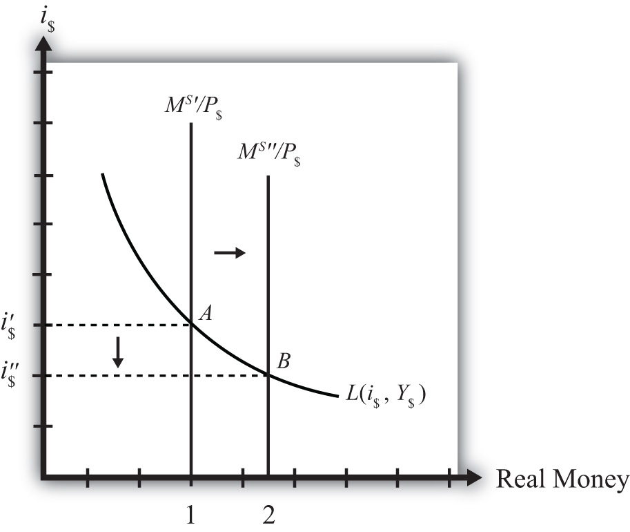

Expansionary monetary policyAn increase in the money supply in a country. refers to any policy initiative by a country’s central bank to raise (or expand) its money supply. This can be accomplished with open market purchases of government bonds, with a decrease in the reserve requirement, or with an announced decrease in the discount rate. In most growing economies the money supply is expanded regularly to keep up with the expansion of gross domestic product (GDP). In this dynamic context, expansionary monetary policy can mean an increase in the rate of growth of the money supply, rather than a mere increase in money. However, the money market model is a nondynamic (or static) model, so we cannot easily incorporate money supply growth rates. Nonetheless, we can project the results from this static model to the dynamic world without much loss of relevance. (In contrast, any decrease in the money supply or decrease in the growth rate of the money supply is referred to as contractionary monetary policy.)
Suppose the money market is originally in equilibrium in Figure 18.3 "Effects of a Money Supply Increase" at point A with real money supply MS′/P$ and interest rate i$′ when the money supply increases, ceteris paribus. The ceteris paribus assumption means we assume that all other exogenous variables in the model remain fixed at their original levels. In this exercise, it means that real GDP (Y$) and the price level (P$) remain fixed. An increase in the money supply (MS) causes an increase in the real money supply (MS/P$) since P$ remains constant. In the diagram, this is shown as a rightward shift from MS′/P$ to MS″/P$. At the original interest rate, real money supply has risen to level 2 along the horizontal axis while real money demand remains at level 1. This means that money supply exceeds money demand, and the actual interest rate is higher than the equilibrium rate. Adjustment to the lower interest rate will follow the “interest rate too high” equilibrium story.
Figure 18.3 Effects of a Money Supply Increase
The final equilibrium will occur at point B on the diagram. The real money supply will have risen from level 1 to 2 while the equilibrium interest rate has fallen from i$′ to i$″. Thus expansionary monetary policy (i.e., an increase in the money supply) will cause a decrease in average interest rates in an economy. In contrast, contractionary monetary policy (a decrease in the money supply) will cause an increase in average interest rates in an economy.
Note this result represents the short-run effect of a money supply increase. The short run is the time before the money supply can affect the price level in the economy. In Chapter 18 "Interest Rate Determination", Section 18.14 "Money Supply and Long-Run Prices", we consider the long-run effects of a money supply increase. In the long run, money supply changes can affect the price level in the economy. In the previous exercise, since the price level remained fixed (i.e., subject to the ceteris paribus assumption) when the money supply was increased, this exercise provides the short-run result.
Jeopardy Questions. As in the popular television game show, you are given an answer to a question and you must respond with the question. For example, if the answer is “a tax on imports,” then the correct question is “What is a tariff?”